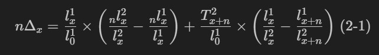

预期寿命分解模型
一、Arriaga法 （离散型）
1、不同年龄别死亡率变化对预期寿命增长的影响
1.1 直接效应
1.2 间接效应
1.3 交互效应
1.4 总效应

式中， $_n\Delta_x$ 是 1、2 两个时点间的年龄别预期寿命变化情况
2、不同疾病死亡率变化对预期寿命增长的影响
$$
_n\Delta_x^i = _n\Delta_x \times \frac{_n m_x^i(2) - _n m_x^i(1)}{_n m_x(2) - _n m_x(1)} \tag{2-2}
$$
式中，$_n m_x^i(1)$表示在时间点 1 时刻,疾病 i 的死亡率；$_n m_x(1)$表示时间点 1 时刻的全因死亡率。
二、Pollard法（连续型）
转载请注明来源，欢迎对文章中的引用来源进行考证，欢迎指出任何有错误或不够清晰的表达。也可以邮件至 771192805@qq.com